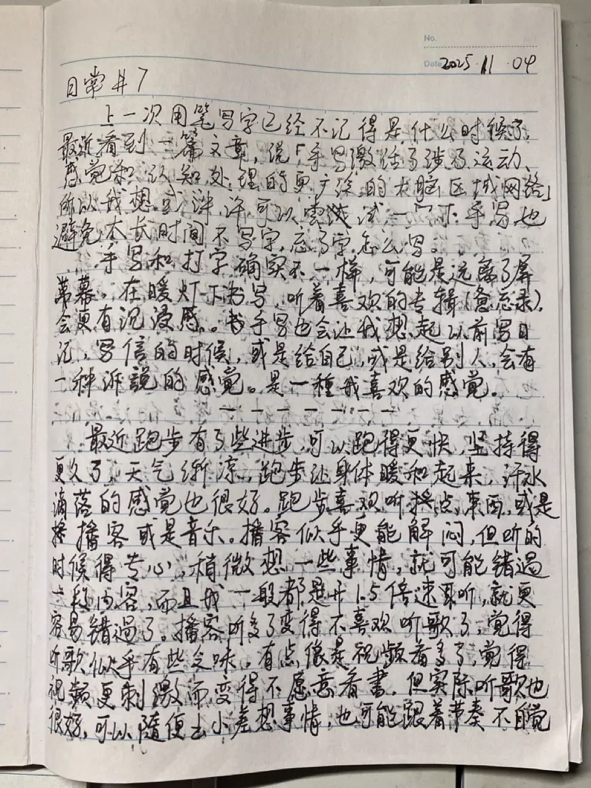
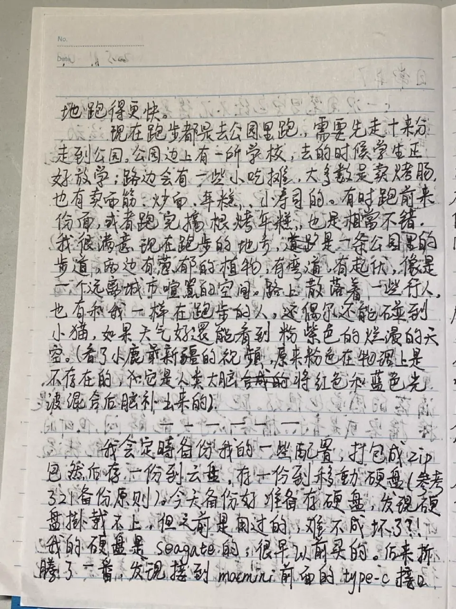
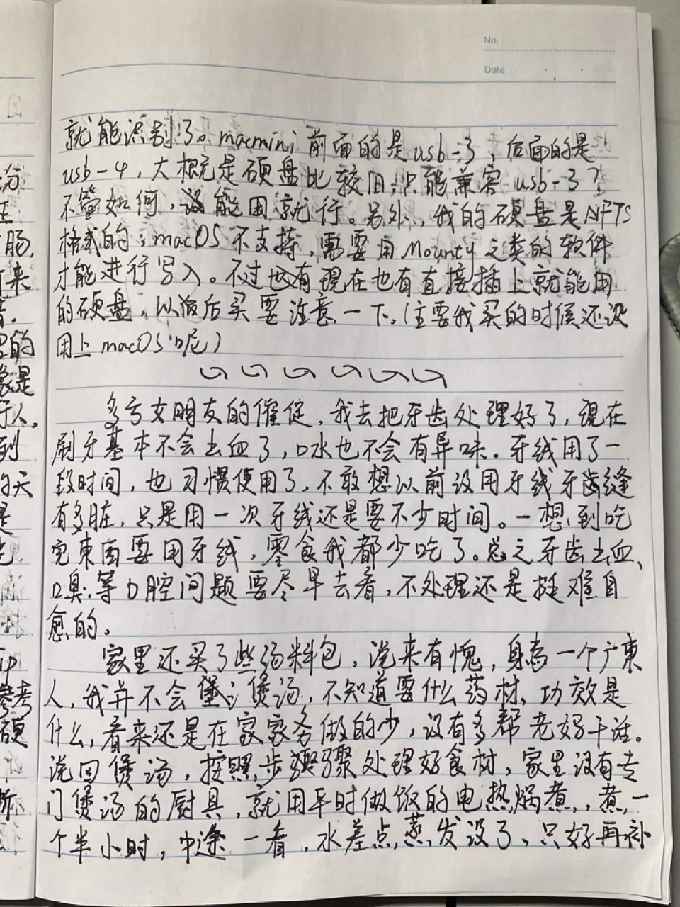
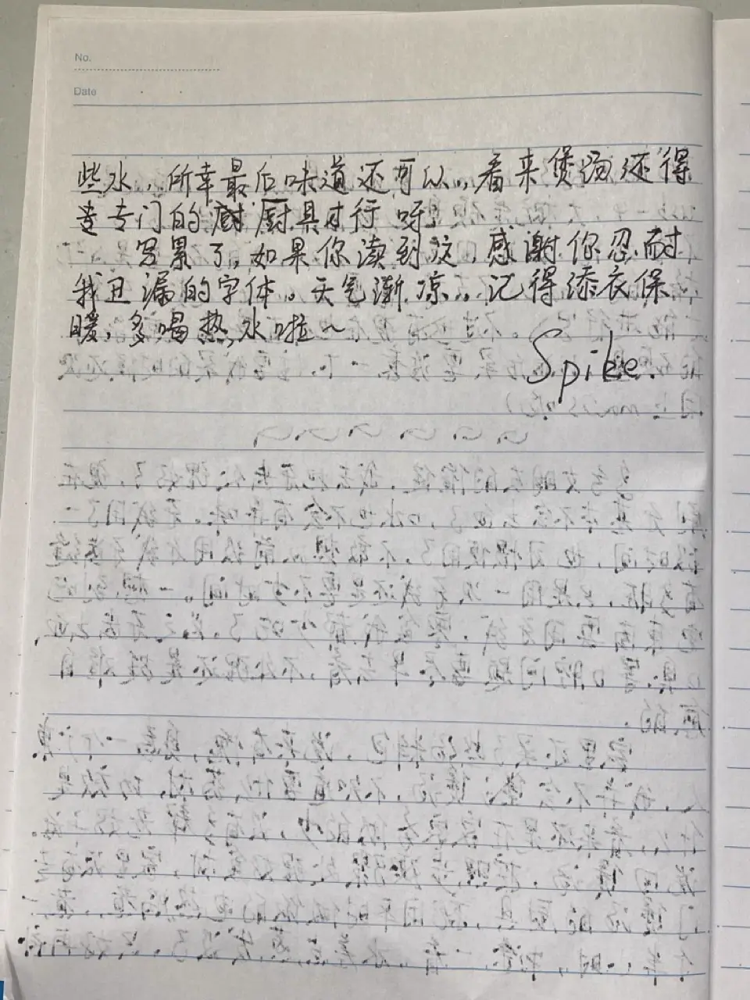

日常#7
手写博客文章、跑步、牙齿、煲汤
🎵 河 (River) - 叶喜儿
这篇文章是手写的，然后拍照、转录成文字。在手机上可能不适合看图片，或者你觉得字太难看清，可以跳过图片看转录后的文字。
{kind=link}

{kind=link}

{kind=link}

{kind=link}

以下是图片的转录内容：
上一次用笔写字已经不记得是什么时候了，最近看到一篇文章，说 「手写激活了涉及运动、感觉和认知处理的更广泛的大脑区域网络」。所以我想或许可以尝试一下手写，也避免太长时间不写字，忘了字怎么写。手写和打字确实不一样，可能是远离了屏幕，在暖灯下书写，听着喜欢的专辑（惫忘录），会更有沉浸感。书手写也会让我想起以前写日记，写信的时候，或是给自己，或是给别人，会有一种诉說的感觉，是一種我喜欢的感觉。
最近跑步有了些进步，可以跑得更快，坚持得更久了，天气渐凉，跑步让身体暖和起来，汗水滴落的感觉也很好。跑步喜欢听点东西，或是播客或是音乐。播客似乎更能解闷，但听的时候得专心，稍微想一些事情，就可能错过一段内容，而且我一般都是开 1.5 倍速听，就更容易错過了。播客听多了变得不喜欢听歌了，觉得听歌似乎有些乏味，有点像是视频看多了，觉得视频更刺激而变得不愿意看书。但实际听歌也很好，可以随便出小差想事情，也可能跟着节奏不自觉地跑得更快。
现在跑步都是去公园里跑，需要先走十来分钟走到公园。公园边上有一所学校，去的时候学生正好放学，路边会有一些小吃摊，大多数是卖烤肠，也有卖面筋、炒面、年糕、小寿司的。有时跑前来份面，或者跑完搞根烤年糕，也是相當不错。我很满意现在跑步的地方，是一条公园里的步道，两边有葱郁的植物，有弯道，有起伏，像是一个远离城市喧嚣的空间。路上散落着一些行人，也有和我一样在跑步的人，偶尔会碰到一两只小猫，天气好还能看到粉紫色的烂漫的天空。（看了小鹿 最近新疆的视频，原来粉色在物理上是不存在的，它是人类大脑将红色和蓝色光波混合后脑补出来的）
我会定時备份我的一些配置，打包成 zip 后存一份到云盘，存一份到移動硬盘（参考 3-2-1 备份策略）。今天备份好准备存硬盘，发现硬盘掛载不上，但之前是用过的，难不成坏了？！我的硬盘是 Seagate 的，很早以前买的。后来折腾了一番，发现接到 Mac mini 前面的 USB-C 接口就能识别了。Mac mini 前面的是 USB 3，后面的是 USB 4，大概是硬盘比较旧，只能兼客 USB 3? 不管如何，能用就行。另外，我的硬盘是 NFTS 格式的，macOS 不支持写入，需要用 Mounty 之类的软件才能进行写入。现在也有直接插上就能用的硬盘，以后买要注意一下。（主要我买的时候还没用上 macOS 呢）
多亏女朋友的催促，我去把牙齿处理好了（见 日常#6），现在到刷牙基本不会出血了，口水也不会有异味。牙线用了一段时间，也习惯使用了，不敢想以前没用牙线牙齿缝是有多脏，只是现在用一次牙线还是要不少时间。一想到吃完东西要用牙线，零食我都少吃了。总之牙齿出血、口臭等口腔问题要尽早去看，不处理还是挺难自愈的。
家里还买了些汤料包，说来有愧，身为一个广人，我并不会煲汤，不知道要什么药材，功效是什么。看来还是在家家务做的少，没有多帮老妈干活。说回煲汤，按照步骤处理好食材，家里没有专门煲汤的厨具，就用平时做饭的电热锅煮，煮一个半小时，中途一看，水差点蒸发没了，只好再补些水，所幸最后味道还可以，看来煲汤还得用专门的厨具才行呀！
写累了，如果你读到这，感谢你忍耐我丑 漏 陋的字体。天气渐凉，记得添衣保暖，多喝热水啦！
图片转录我用的是 白描，想着可能经常用到，索性花 40 块开了永久的会员。白描用起来还是蛮方便的，我将所有图片拍照后多选识别内容就能得到文本了，识别出来的内容 90% 都没啥问题，剩下的一些可能是我字写的不工整，部分字和英文识别后需要再调整一下。另外就是纸张上一些 Date、No 之类的内容也会除别出来，尽管我不太需要。
手写的一个问题是，写完之后就不太能去修改了，修改的工作量比打字大得多，后面如果修改我就只会更新转录文本了。另外一点是不方便附链接。
因为手写比打字成本更高，有的细节手写的时候可能就懒得写了，或许某种程度上也能减少啰嗦？
太久没写字了，写得快，写得潦草，加上练字也不多，写出来的字还真是不好看呢。Anyway，多写多练。
另外，在网络上公开你的个人信息，如声音、长相、字体等，或许会被人利用，分享时需要斟酌。